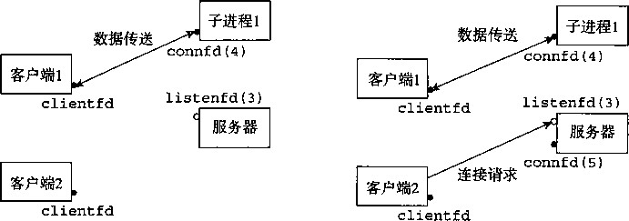
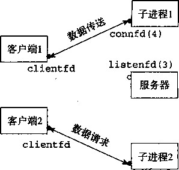
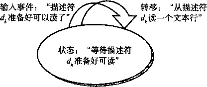

第11章网络编程▲ 641
然后，我们将URI解析为一个文件名和一个可能为空的CGI参数字符串，并且我们设置一 个标志，表明请求的是静态内容还是动态内容（第21行)。如果文件在磁盘上不存在，我们立即 发送一个错误信息给客户端并返回。
最后，如果请求的是静态内容，我们就验证该文件是•-个普通文件，而我们是有读权限的 (第29行)。如果是这样，我们就向客户端提供静态内容（第34行)。相似地，如果请求的是动 态内容，我们就验证该文件是可执行文件（第37行)，如果是这样,我们就继续，并且提供动态 内容（第42行)。
clienterror 函数
TINY缺乏一个实际服务器的许多错误处理特性。然而，它会检查一些明显的错误，并把它 们报告给客户端。图11-30中的clienterror函数发送一个HTTP响应到客户端，在响应行中 包含相应的状态码和状态消息，响应主体中包含一个HTML文件，向浏览器的用户解释这个错 误。回想一下，HTML响应应该指明主体中内容的大小和类型。因此，我们选择创建HTML内 容为一个字符串，这样一来我们可以简单地确定它的大小。还有，请注意我们为所有的输出使用 的都是图10-3中的健壮的rio_writen函数。
code/netp/tiny/tiny. c
丨 void clienterror(int fd, char *cause, char *errnum,
char *shortmsg, char *longmsg)
{
char buf[MAXLINE], body[MAXBUF];
5
/本 Build the HTTP response body */
sprintf (body, "<litml><title>Tiny Error</title>");
sprintf(body, "%s<body bgcolor=""ffffff M ">\r\n", body);
sprintf(body, "%s%s: %s\r\n", body, errnum, shortmsg);
sprintf(body, "%s<p>%s: %s\r\n", body, longmsg, cause);
sprintf(body, "%s<hr><em>The Tiny Web server</em>\r\n", body);
12
卜 Print the HTTP response 氺 /
sprintf(buf, "HTTP/1.0 %s %s\r\n", errnum, shortmsg);
Rio_writen(fd, buf, strlen(buf));
sprintf(buf, "Content-type: text/html\r\n");
Rio_writen(fd, buf, strlen(buf));
'18 sprintf (buf, " Content-length: %d\r\n\r\n" , (int) strlen (body));
Rio_writen(fd, buf, strlen(buf));
Rio_writen(fd, body, strlen(body));
code/netp/tiny/tiny. c
图11-30 TINY clienterror ：向客户端发送一个出错消息
read_requesthdrs 函数
TINY不使用请求报头中的任何信息。它仅仅调用图11-31中的read—requesthdrs函数 来读取并忽略这些报头。注意，终止请求报头的空文本行是由回车和换行#•对组成的，我们在第 6行中检查它。
parse—uri 函数
TINY假设静态内容的主目录就是它的当前目录，而可执行文件的主目录是./cgi-bin。 任何包含字符串cgi_bin的URI都会被认为表示的是对动态内容的请求。默认的文件名是 ./home.htmlo
code/netp/tiny/tiny. c
void read_requesthdrs(rio_t *rp)
char buf[MAXLINE];
6
7
9
10
11
Rio_readlineb(rp, buf, MAXLINE); while(strcmp(buf, "\r\n")) {
Rio.readlineb(rp, buf, MAXLINE); printf ( " 0 /oS " , buf );
>
return;
code/netp/tiny/tiny. c
图 11-31 TINY read—requesthdrs ： 读取并忽略请求报头
图11-32中的parse_uri函数实现了这些策略。它将URI解析为一个文件名和一个可选 的CGI参数字符串。如果请求的是静态内容（第5行)，我们将清除CGI参数串（第6行)，然 后将URI转换为一个相对的Unix路径名，例如./index .html (第7〜8行)。如果URI是用 “/”结尾的（第9行)，我们将把默认的文件名加在后面（第10行)。另一方面，如果请求的是 动态内容（第13行)，我们就会抽取出所有的CGI参熬（第14〜20行)，并将URI剩下的部分 转换为一个相对的Unix文件名（第21〜22行)。
code/netp/tiny/tiny. c
1
2
3
A
5
6
7
9
10
11
12
13
14
15
16
17
18
19
21 22
23
24
25
int
parse一uri(char *uri, char *filename, char *cgiargs) char *ptr;
if (!strstr(uri, "cgi-bin")) { /* Static content */
strcpy (cgiargs, strcpy(filename,".； strcat(filename, uri); if (uri[strlen(uri)-1] == '/')
strcat(filename, "home.html"); return 1;
>
else ■[ /* Dynamic content */
ptr = index(uri, ); if (ptr) {
strcpy(cgiargs, ptr+1);
*ptr = 1 \0•;
}
)；
else
strcpy(cgiargs, strcpy(filename, "•") strcat(filename, uri) return 0;
}
code/netp/tiny/tiny. c
serve一static 函数
TINY提供四种不同类型的静态内容：HTML文件、无格式的文本文件，以及编码为GIF和 JPEG格式的图片。这些文件类型占据Web上提供的绝大部分静态内容。
图11-33中的serve一static函数发送一个HTTP响应，其主体包含一个本地文件的内容。 首先，我们通过检查文件^的后缀来判断文件类型（第7行)，并且发送响应行和响应报头给客 户端（第8〜12行)。注意用一个空行终止报头。
code/netp/tiny/tiny. c
void serve_static(int fd, char *filename, int filesize)
{
int srcfd;
char *srcp, filetype[MAXLINE], buf[MAXBUF];
5
/氺 Send response headers to client */
get_filetype(filename, filetype);
sprintf(buf, "HTTP/1.0 200 0K\r\n n );
sprintf(buf, "%sServer: Tiny Web Server\r\n", buf);
sprintf (buf, "7 8 sCont ent-length: %d\r\n", buf, f ilesize);
sprintf(buf, "%sContent-type: %s\r\n\r\n", buf, filetype);
Rio_writen(fd, buf, strlen(buf));
13
"M /* Send response body to client */
srcfd = Open(filename, 0_RD0NLY, 0);
srcp = Mmap(0, filesize, PR0T_READ, MAP_PRIVATE, srcfd, 0);
Close(srcfd);
Rio_writen(fd, srcp, filesize);
Munmap(srcp, filesize);
>
21
卜
* get_filetype - derive file type from file name
*/
void get_filetype(char ^filename, char *filetype)
{
if (strstr(filename, ".html"))
strcpy(filetype, "text/html");
else if (strstr(filename, ".gif"))
strcpy (f iletype , "image/gif");
3! else if (strstr(filename, ".jpg"))
strcpy(f iletype , "image/ jpeg") ;
else
strcpy(filetype, "text/plain");
35 >
code/netp/tiny/tiny. c
图 11-33 TINYserve_static ：为客户端提供静态内容
接着，我们将被请求文件的内容拷贝到已连接描述符fd来发送响应主体。这里的代码是比 较微妙的，需要仔细研究。第15行以读方式打开filename,并获得它的描述符。在第16行, Unix mmap函数将被请求文件映射到一个虚拟存储器空间。回想我们在第9.8节中对mmap的 讨论，调用mmap将文件srcfd的前filesize个字节映射到一个从地址srcp开始的私有只读 虚拟存储器区域。
一旦将文件映射到存储器，我们就不再需要它的描述符了，所以我们关闭这个文件（第17 行)。执行这项任务失败将导致一种潜在的致命的存储器泄漏。第18行执行的是到客户端的实际 文件传送。rio一writen函数拷贝从srcp位置开始的filesize个字节（它们当然已经被映射 到了所请求的£件）到客户端的已连接描述符。最后，第19行释放了映射的虚拟存储器区域。 这对于避免潜在的致命的存储器泄漏是很重要的。
serve_dynamic 函数
TINY通过派生一个子进程并在子进程的上下文中运行一个CGI程序，来提供各种类型的动 态内容。
图11-34中的serve一dynamic函数一开始就向客户端发送一个表明成功的响应行，同时 还包括带有信息的Server报头。CGI程序负责发送响应的剩余部分。注意，这并不像我们可 能希望的那样健壮，因为它没有考虑到CGI程序会遇到某些错误的可能性。
code/netp/tiny/tiny. c
void serve_dynamic(int fd, char *filename, char *cgiargs)
{
chax buf[MAXLINE], *emptylist[] = { NULL >;
4
/* Return, first part of HTTP response */
sprintf(buf, "HTTP/1.0 200 0K\r\n");
Rio_writen(fd, buf, strlen(buf));
sprintf(buf, "Server: Tiny Web Server\r\n");
Rio_writen(fd, buf, strlen(buf));
i o
if (ForkO == 0) i /* child */
/* Real server would set all CGI vars here */
i ：i setenv (" QUERY_STRING" , cgiargs, 1);
]4 Dup2(fd, STDDUT_FILEN0); /* Redirect stdout to client */
Execve(filename, emptylist, environ); /氺 Run CGI program */
>
Wait(NULL); /氺 Parent waits for and reaps child 氺/
>
：；——： ； ；~ code/netp/tiny/tiny. c
图 11-34 TINY serve_dynamic ：为客户端提供动态内容
在发送了响应的第一部分后 ， 会派生一个新的子进程（第11行)。子进程用来自请求URI 的CGI参数初始化QUERY一STRING环境变量（第13行)。注意，一个真正的服务器还会在此 处设置其他的CGI环境变量。为了简短，我们省略了这一步。还有，我们注意到Solaris系统使 用的是putenv函数，而不是setenv函数。 •
接下来，子进程重定向它的标准输出到已连接文件描述符（第14行)，然后加载并运行CGI 程序（第15行)。因为CGI程序运行在子进程的上下文中，它能够访问所有在调用execve函 数之前就存在的打开文件和环境变量。因此，CGI程序写到标准输出上的任何东西都将直接送到 客户端进程，不会受到任何来自父进程的干涉。
其间，父进程阻塞在对wait的调用中，等待当子进程终止的时候，回收操作系统分配给子 进程的资源（第17行)。
处理过早关闭的连接
尽管一个 Web 服务器的基本功能非常简单，但是我们不想给你一个假象，以为编写一个实 际的 Web 服务器是非常简单的。构造一个长时间运行而不崩溃的健壮的 Web 服务器是一个困难 的任务 ， 比起在这里我们已经学习了的内容 ， 它要求对 Unix 系统编程有更加深入的理解。例如，
如果一个服务器写一个已经被客户端关闭了的连接（比如，因为你在浏览器上单击了 “Stop” 按钮），那么第一次这样的写会正常返回，但是第二次写就会引起发送 SIGPIPE 信号，这个信 号的默认行为就是终止这个进程。如果捕获或者忽略 SIGPIPE 信号，那么第二次写操作会返 回值一 1, 并将 errno 设置为 EPIPE 。 strerr 和 perror 函数将 EPIPE 错误报告为 “Broken pipe” ，这是一个迷惑了很多人的不太直观的信息。总的来说，一个健壮的服务器必须捕获这些 SIGPIPE 信号，并且检查 write 函数调用是否有 EPIPE 错误。
11.7 小结
每个网络应用都是基于客户端-服务器模型的。根据这个模型 ， 一个应用是由一个服务器 和一个或多个客户端组成的。服务器管理资源，以某种方式操作资源 ， 为它的客户端提供服务。 客户端-服务器模型中的基本操作是客户端_服务器事务，它是由客户端请求和跟随其后的服 务器响应组成的。
客户端和服务器通过因特网这个全球网络来通信。从一个程序员的观点来看，我们可以把因 特网看成是一个全球范围的主机集合，具有以下几个属性：1)每个因特网主机都有一个唯一的 32位名字，称为它的IP地址。2) IP地址的集合被映射为一个因特网域名的集合。3)不同因特 网主机上的进程能够通过连接互相通信。
客户端和服务器通过使用套接字接口建立连接。 一个 套接字是连接 的一个 端点，连接是以文 件描述符的形式提供给应用程序的。套接字接口提供了打开和关闭套接字描述符的函数。客户端 和服务器通过读写这些描述符来实现彼此间的通信。
Web服务器使用HTTP协议和它们的客户端（例如浏览器）彼此通信。浏览器向服务器请 求静态或者动态的内容。对静态内容的请求是通过从服务器磁盘取得文件并把它返回给客户端 来服务的。对动态内容的请求是通过在服务器上一个子进程的上下文中运行一个程序并将它的 输出返回给客户端来服务的。CGI标准提供了一组规则，来管理客户端如何将程序参数传递给 服务器 ， 服务器如何将这些参数以及其他信息传递给子进程，以及子进程如何将它的输出发送 回客户端。
只用几百行C代码就能实现一个简单但是有功效的Web服务器，它既可以提供静态内容， 也可以提供动态内容。
参考文献说明
有关因特网的官方信息源被保存在一系列的可免费获取的带编号的文档中，这个文档称为 RFC (Requests For Comments,请求注解，Internet标准（草案)）。在以下网站可获得可搜索的 RFC的索引
RFC通常是为因特网基础设施的开发者编写的，因此，对于普通读者来说，往往过于详细 了。然而，作为权威信息 ， 没有比它更好的信息来源了。1111^1.1协议记录在1^€2616中。 MIME类型的权威列表保存在
http://www • iana . org/assignments/media-types
关于计算机网络互联有大量很好的通用文献[62，80, 113]。伟大的技术作家W.Ri C hard Stevens编写了一系列相关的经典文献，如高级Unix编程[110]、因特网协议[105, 106, 107], 以及Unix网络编程[108, 109]。认真学习Unix系统编程的学生会想要研究所有这些内容。不幸
的是，Stevens在1999年9月1日逝世。我们会永远记住他的贡献。
家庭作业
** 11.6 A.修改TINY使得它会原样返回每个请求行和请求报头。
使用你喜欢的浏览器向TINY发送一个对静态内容的请求。把TINY的输出记录到一个文件中。
检查TINY的输出，确定你的浏览器使用的HTTP的版本 d
参考RFC 2616中的HTTP/1.1标准，确定你的浏览器的HTTP请求中每个报头的含义。你可以从 www. rfc-editor. org/rfc. html 获得 RFC 2616。
**11.7扩展TINY,使得它可以提供MPG视频文件。用一个真正的浏览器来检验你的工作。
**11.8修改TINY，使得它在SIGCHLD处理程序中回收操作系统分配给CGI子进程的资源，而不是显式地 等待它们终止。
** 11.9修改TINY,使得当它服务静态内容时，使用malloc、rio_readn和rio_writen,而不是 mmap和rio_writen,来拷贝被请求文件到巳连接描述符。
**11.10 A.写出图11-26中CGI adder函数的HTML表单。你的表单应该包括两个文本框，用户将需要相 加的两个数字填在这两个文本框中。你的表单应该使用GET方法请求内容。
用这样的方法来检查你的程序：使用一个真正的浏览器向TINY请求表单，向TINY提交填写好 的表单，然后显示adder生成的动态内容。
**11.11扩展TINY,以支持HTTPHEAD方法。使用TELNET作为Web客户端来验证你的工作。
11.12扩展™Y,使得它服务以HTTPPOST方式请求的动态内容。用你喜欢的Web浏览器来验证你的工作。 V11-13修改TINY,使得它可以干净地处理 （而不 是终止 ） 在write函数试图写一个过早关闭的连接时发 生的SIGPIPE信号和EPIPE错误。
练习题答案
练习题 11.1
十六进制地址 |
点分十进制地址 |
0x0 |
0.0.0.0 |
Oxffffffff |
255.255.255.255 |
0x7f000001 |
127.0.0.1 |
0xcdbca079 |
205.188.160.121 |
0x400c950d |
64.12.149.13 |
0xcdbc9217 |
205.188.146.23 |
练习题 11.2
code/netp/hex2dd.c
1
2
3
A
5
6
7
9
10
11
12
#include "csapp.h"
int main(int argc, char **argv)
struct in_addr inaddr; /* addr in network byte order */
unsigned int addr; /* addr in host byte order */
if (argc != 2) {
fprintf(stderr, "usage: %s <hex number>\n", argv[0]); exit(0);
}
sscanfCargv[l], "%x", &addr);
inaddr.s_addr = htonl(addr);
printf("%s\n M , inet_ntoa(inaddr)); ,
exit(O);
code/netp/hex2dd. c
练习题11.3
code/netp/dd2hex. c
#include "csapp.h"
int main(int argc, char **argv)
struct in_addr inaddr; /* addr in network byte order */
unsigned int addr; /* addr * in host byte order */
if (argc != 2) {
fprintf(stderr, "usage: %s <dotted-decimal>\n", argv[0]); exit(0);
>
if (inet_aton(argv[l], &inaddr) == 0) app^error("inet_aton error"); addr : ntohl(inaddr.s_addr); printf("0x%x\n", addr);
exit(0);
code/netp/dd2hex. c
练习题11_4每次我们请求google.com的主机条目时，相应的因特网地址列表以一种不同的、轮转（round- robin)的顺序返回。
unix> ./hostinfo google.com official hostname: google. com address: 74.125.127.100 address: 74.125.45.100 address: 74.125.67.100
unix> ./hostinfo google.com official hostname: google. com address: 74.125.67.100 address: 74.125.127.100 address: 74.125.45.100
皿ix> ./hostinfo google.com official hostname: google. com address: 74.125.45.100 address: 74.125.67.100 address: 74.125.127.100
在不同的DNS查询中，返回地址的不同顺序称为DNS轮转（DNS round-robin)。它可以用来对一个大 量使用的域名的请求做负载平衡。
练习题11.5标准I/O能在CGI程序里工作的原因是，在子进程中运行的CGI程序不需要显式地关闭它的 输入输出流。当子进程终止时，内核会自动关闭所有描述符。
| 第 12 章 |
Computer Systems ： A Programmer' s Perspective, 2E
并发编程
正如我们在第8章学到的，如果逻辑控制流在时间上重叠，那么它们就是 并发的 （concmrent)。 这种常见的现象称 为并发 （concurrency),出现在计算机系统的许多不同层面上。硬件异常处理 程序、进程和Unix信号处理程序都是大家很熟悉的例子。
到目前为止，我们主要将并发看做是一种操作系统内核用来运行多个应用程序的机制。但 是，并发不仅仅局限于内核。它也可以在应用程序中扮演重要角色。例如，我们已经看到Unix 信号处理程序如何允许应用响应异步事件，例如用户键人ctrl-c,或者程序访问虚拟存储器的 一个未定义的区域。应用级并发在其他情况下也是 ¥有用的：
•访问慢速 I/O设备。当一个应用正在等待来自慢速I/O设备（例如磁盘）的数据到达时 , 内核会运行其他进程，使CPU保持繁忙。每个应用都可以按照类似的方式，通过交替执行 I/O请求和其他有用的工作来使用并发。
• 与人交互。 和计算机交2的人要求计算机有同时执行多个任务的能力。例如，他们在打印 一个文档时，可能想要调整一个窗口的大小。现代视窗系统利用并发来提供这种能力。每 次用户请求某种操作（比如通过单击鼠标）时，一个独立的并发逻辑流被创建来执行这个 操作。
• 通过推迟工作以降低延迟。 有时，应用程序能够通过推迟其他操作和并发地执行它们，利 用并发来降低某些操作的延迟。比如，一个动态存储分配器可以通过推迟合并，把它放到 一个运行在较低优先级上的并发“合并”流中，在有空闲的CPU周期时充分利用这些空闲 周期，从而降低单个free操作的延迟。
• 服务多个网络客户端。 我们在第11章中学习的迭代网络服务器是不现实的，因为它们一 次只能为一个客户端提供服务。因此，一个慢速的客户端可能会导致服务器拒绝为所有其 他客户端服务。对于一个真正的服务器来说，可能期望它每秒为成百上千的客户端提供服 务，由于一个慢速客户端导致拒绝为其他客户端服务，这是不能接受的。一个更好的方法 是创建一个并发服务器，它为每个客户端创建一个单独的逻辑流。这就允许服务器同时为 多个客户端服务，并且这也避免了慢速客户端独占服务器。
• 在多核机器上进行并行计算。 许多现代系统都配备有多核处理器，多核处理器中包含多个 CPU。被划分成并发流的应用程序通常在多核机器上比在单处理器机器上运行得快，因为 这些流会并行执行，而不是交错执行。
使用应用级并发的应用程序称为并 发程序 （concurrent program)。现代操作系统提供了三种 基本的构造并发程序的方法：
• 进程。 用这种方法，每个逻辑控制流都是一个进程，由内核来调度和维护。因为进程 有独立的虚拟地址空间，想要和其他流通信，控制流必须使用某种显式 的进程间通信 (interprocess communication, IPC) 机制。
•I/O 多路复用。 在这种形式的并发编程中，应用程序在一个进程的上下文中显式地调度它 们自己的逻辑流。逻_流被楱型化为状态机，数据到达文件描述符后，主程序显式地从一 个状态转换到另一个状态。因为程序是一个单独的进程，所以所有的流都共享同一个地址 空间。
• 线程。线程是运行在一个单一进程上下文中的逻辑流，由内核进行调度。你可以把线程看
成是其他两种方式的混合体，像进程流一样由内核进行调度，而像I/O多路复用流一样共 享同一个虚拟地址空间。
本章研究这三种不同的并发编程技术。为了使讨论更加具体,我们始终以同一个应用为 例——11.4.9节中的迭代echo服务器的并发版本。
12.1 基于进程的并发编程
客户端1 •、、、、、、、连接请求
clientfd 、、、、- l ^tenfd(3 )
1服务器
connfd(4)
客户端2，
clientfd
图 12-1 第一步：服务器接受客户 端的连接请求
构造并发程序最简单的方法就是用进程，使用那些大家都很熟悉的函数，像fork、exec 和waitpid。例如，一个构造并发服务器的自然方法就是，
在父进程中接受客户端连接请求，然后创建一个新的子进程 来为每个新客户端提供服务。
为了了解这是如何工作的，假设我们有两个客户端和一 个服务器，服务器正在监听一个监听描述符（比如描述符3)
上的连接请求。现在假设服务器接受了客户端1的连接请求，
并返回一个已连接描述符（比如描述符4),如图12-1所示。
在接受连接请求之后，服务器派生一个子进程，这个子 进程获得服务器描述符表的完整拷贝。子进程关闭它的拷贝 中的监听描述符3，而父进程关闭它的已连接描述符4的拷 贝，因为不再需要这些描述符了。这就得到了图12-2中的状态，其中子进程正忙于为客户端提 供服务。因为父、子进程中的已连接描述符都指向同一个文件表表项，所以父进程关闭它的已连 接描述符的拷贝是至关重要的。否则，将永远不会释放已连接描述符4的文件表条目，而且由此 引起的存储器泄漏将最终消耗尽可用的存储器，使系统 崩溃。
现在，假设在父进程为客户端1创建了子进程之后，它接受一个新的客户端2的连接请求, 并返回一个新的已连接描述符（比如描述符5)，如图12-3所示。然后，父进程又派生另一个子 进程，这个子进程用已连接描述符5为它的客户端提供服务，如图12-4所示。此时，父进程正 在等待下一个连接请求，而两个子进程正在并发地为它们各自的客户端提供服务。

图 12-2 第二步：服务器派生一个 图 12-3 第三步：服务器接受另一
子进程为这个客户端服务 个连接请求
12.1.1基于进程的并发服务器
图12-5展示了一个基于进程的并发echo服务器的代码。第29行调用的echo函数来自于 图11-21。关于这个服务器，有几点重要内容需要说明：
•首先，通常服务器会运行很长的时间，所以我们必须要包括一个SIGCHLD处理程 序，来回收僵死（zombie)子进程的资源（第4〜9 行）。因为当SIGCHLD处理程序执行时，SIGCHLD 信号是阻塞的，而Unix信号是不排队的，所以 SIGCHLD处理程序必须准备好回收多个僵死子进程 的资源。

connfd(5)
其次，父子进程必须关闭它们各自的cornifd (分别为 第33行和第30行）拷贝。就像我们已经提到过的，这 对父进程而言尤为重要，它必须关闭它的已连接描述 符，以避免存储器泄漏。
最后，因为套接字的文件表表项中的引用计数，直到 父子进程的cormfd都关闭了，到客户端的连接才会 终止。
图12-4第四步：服务器派生另一个 子进程为新的客户端服务
code/conc/echoserverp. c
#include "csapp.h" void echo(int connfd);
void sigchld^handler(int sig)
{
while (waitpid(-l, 0, WNOHANG) > 0)
return;
12
13
'14
15
!6
1?
18
19
21 .?2
23
24
25
27 23 29 ：i0 n ]i2 n
int main(int argc, char 16 argv) int listenfd, connfd, port;
socklen_t clientlen=sizeof(struct sockaddr_in); struct sockaddr_in clientaddr;
if (argc != 2) •{
fprintf(stderr, "usage: %s <port>\n", argv[0]); exit(0);
}
port = atoi(argv[l]);
Signal(SIGCHLD, sigchld_handler); listenfd = 0pen_listenfd(port); while (1) {
connfd = Accept(listenfd, (SA 17 ) feclientaddr, feclientlen); if (ForkO == 0) {
Close(listenfd); h Chi id closes its listening socket */
echo (connfd) ; / :fe Child services client */
Close(connfd); /* Child closes connection with client */
exit(0); 卜 Child exits */
>
Close (connfd) ; / 本 Parent, closes connected socket (important!) */
>
12.1.2 关于进程的优劣
对于在父、子进程间共享状态信息，进程有一个非常清晰的模型：共享文件表，但是不共享 用户地址空间。进程有独立的地址空间既是优点也是缺点。这样一来，一个进程不可能不小心覆 盖另一个进程的虚拟存储器，这就消除了许多令人迷惑的错误一这是一个明显的优点。
另一方面，独立的地址空间使得进程共享状态信息变得更加困难。为了共享信息，它们必须 使用显式的IPC (进程间通信）机制。基于进程的设计的另一个缺点是，它们往往比较慢，因为 进程控制和IPC的开销很高。
Unix IPC
在本书中，你已经遇到好几个IPC的例子了。第8章中的waitpid函数和Unix信号是 基本的IPC机制，它们允许进程发送小消息到同一主机上的其他进程。第11章的套接字接口 是IPC的一种重要形式，它允许不同主机上的进程交换任意的字节流。然而，术语UnixIPC通 常指的是所有允许进程和同一台主机上其他进程进行通信的技术。其中包括管道、先进先出 (FIFO)、系统V共享存储器，以及系统V信号量（semaphore)。这些机制超出了我们的讨论范 围。Stevens的著作[108]是很好的参考资料。
®练习题 12.1 在图12-5中，并发服务器的第33行，父进程关闭了巳连接描述符后，子进程仍然能够 使用该描述符和客户端通信。这是为什么？
练习题 12.2 如果我们要删除图12-5中关闭巳连接描述符的第30行，从没有存储器泄漏的角度来 说，代码将仍然是正确的。这是为什么？
12.2 基于 I/O 多路复用的并发编程
假设要求你编写一个echo服务器，它也能对用户从标准输入键入的交互命令做出响应。在 这种情况下，服务器必须响应两个互相独立的I/O事件：1)网络客户端发起连接请求，2)用户 在键盘上键入命令行。我们先等待哪个事件呢？没有哪个选择是理想的。如果在accept中等 待一个连接请求，我们就不能响应输入的命令。类似地，如果在read中等待一个输入命令，我 们就不能响应任何连接请求。
针对这种困境的一个解决办法就是I/O 多路复用 （I/O multiplexing)技术。基本的思路就是 使用select函数，要求内核挂起进程，只有在一个或多个I/O事件发生后，才将控制返回给应 用程序，就像在下面的示例中一样：
•当集合{0, 4}中任意描述符准备好读时返回。
•当集合{1, 2, 7}中任意描述符准备好写时返回。
•如果在等待一个I/O事件发生时过了 152.13秒，就超时。
select是一个复杂的函数，有许多不同的使用场景。我们将只讨论第一种场景：等待一组 描述符准备好读。全面的讨论请参考[109，110]。
#include <nnistd.li>
#include <sys/types.h>
int select(int n, fd_set *fdset, NULL, NULL, NULL);
返回已准备好的描述符的非零的个数，若出错则为一 1 。 FD_ZERO(fd_set *fdset); Clear all bits in fdset */
FD_CLR(int fd, fd_set *fdset); /* Clear bit fd in fdset */
FD_SET(int fd, fd_set *fdset); /* Turn on bit fd in fdset */
FD_ISSET(int fd, fd_set *fdset) ; /* Is bit. fd in fdset on? */
处理描述符集合的宏。
select函数处理类型为fd—set的集合，也叫做描述符集合。逻辑上，我们将描述符集合 看成一个大小为 n 的位向量（在节中介绍过的）：
b n -i， …， b” Z>o
每个位\对应于描述符h当且仅当~=1，描述符A才表明是描述符集合的一个元素。只 允许你对描述符集合做三件事：1)分配它们，2)将一个此种类型的变量赋值给另一个变量， 3)用FD一ZERO、FD一SET、FD一CLR和FDJSSET宏指令来修改和检査它们。
针对_们的目的，select ^数有两个^入：一个称为读集合的描述符集合（fdset)和该 读集合的基数（n)(实际上是任何描述符集合的最大基数)。select函数会一直阻塞，直到读 集合中至少有一个描述符准备好可以读。当且仅当一个从该描述符读取一个字节的请求不会阻 塞时，描述符灸就表示准备好可以读了。作为一个副作用，select修改了参数fdset指向的 fd一set,指明读集合中一个称为准备好集合（ready set)的子集，这个集合是由读集合中准备 好奇以读了的描述符组成的。函数返回的值指明了准备好集合的基数。注意，由于这个副作用， 我们必须在每次调用select时者P更新读集合。
code/conc/select. c
#include "csapp.h"
void echo(int connfd);
void command(void);
A
int mainCint argc, char **argv)
{
int listenfd, connfd, port;
B socklen_t clientlen = sizeof(struct sockaddr_in);
struct sockaddr_in clientaddr;
io fd_set read_set, ready_set;
n
if (argc != 2) {
fprintf(stderr, "usage: %s <port>\n", argv[0]);
exit(0);
>
port = atoi(argv[1]);
listenfd = Open_listenfd(port);
18
FD_ZERO(&read_set); 卜 Clear read set */
FD_SET(STDIN_FILEN0, &read_set); /* Add stdin to read set */
FD_SET(listenfd, &read_set); /* Add listenfd to read set */
22
while (1) {
ready_set = read_set;
Select(listenfd+1, &ready_set, NULL, NULL, NULL);
if (FD_ISSET(STDIN_FILENO, &ready_set))
commandO; /* Read command line from stdin */
if (FD_ISSET(listenfd, &ready_set)) {
connfd = Accept(listenfd, (SA *)&clientaddr, &clientlen);
echo(connfd); /* Echo client input until EOF */
Close(connfd);
>
>
>
35
void command(void) {
char buf[MAXLINE];
if (!Fgets(buf, MAXLINE, stdin))
exit(0); /* EOF */
printf("%s", buf); /* Process the input command */
-- -- codc/coftc/sclccLc
图12-6使用I/O多路复用的echo服务器。服务器使用select等待监听描述符上的连接请求和标准 输入上的命令
理解select的最好办法是研究一个具体例子。图 12-6 展示了如何利用select来实现一 个迭代echo服务器，它也可以接受标准输入上的用户命令。一开始，我们用图11-7中的open一 listenfd函数打开一个监听描述符（第17行)，然后使用FD 一 ZERO创建一个空的读集合 19 行）：
listenfd
stdin
|
3 |
2 |
1 |
0 |
|
|
read 一 set ( 0 ): |
0 |
0 |
0 |
0 |
接下来，在第20和21行中，我们定义由描述符0 (标准输入）和描述符3 (监听描述符） 组成的读集合：
listenfd 3 2
stdin 1 0
0
0
read_set ({ 0 ，3}):
在这里，我们开始典型的服务器循环。但是我们不是调用accept函数来等待一个连接请 求，而是调用select函数，这个函数会一直阻塞，直到监听描述符或者标准输入准备好可以 读（第25行)。例如，下面是当用户按回车键,因此使得标准输入描述符变为可读时，select 会返回的ready一set的值：
listenfd
stdin
|
3 |
2 |
1 |
0 |
|
|
ready_set ({ 0 }): |
0 |
0 |
0 |
1 |
一旦select返回，我们就用FD_ISSET宏指令来判断哪个描述符准备好可以读了。如果 是标准输入准备好了（第26行)，我们就调用command函数，该函数在返回到主程序前，会 读、解析和响应命令。.如果是监听描述符准备好了（第28行)，我们就调用accept来得到一 个已连接描述符，然后调用图 12-21 中的echo函数，它会将来自客户端的每一行又回送回去， 直到客户端关闭这个连接中它的那一端。
虽然这个程序是使用select的一 个很好 示例，但是它仍然留下了一些问题待解决。问题 是一旦它连接到某个客户端，就会连续回送输入行，直到客户端关闭这个连接中它的那一端。因 此，如果你键入一个命令到标准输入，你将不会得到响应，直到服务器和客户端之间结束。一个 更好的方法是更细粒度的多路复用，服务器每次循环（至多）回送一个文本行。
_练习题12.3在大多数的Unix系统里，在标准输入上键入ctrl - d表示EOF。在图12.6中的程序阻 塞在对select的调用上时，如果你键入ctrl-d会发生什么？
12.2.1基于I/O多路复用的并发事件驱动服务器
I/O多路复用可以用做并发事 件驱动 （event-driven)程序的基础，在事件驱动程序中，流是 因为某种事件而前进的。一般概念是将逻辑流模型化为状态机。不严格地说，一个 状态机 （state machine)就是一 组状态 （state)、 输入事件 （input event) 和转移 （transition),其中转移就是将 状态和输入事件映射到状态。每个转移都将一个（输入状态，输入事件）对映射到一个输出状 态。 自循环 （sdf-loop)是同一输入和输出状态之间的转移。通常把状态机画成有向图，其中节 点表示状态，有向弧表示转移，而弧上的标号表示输入事件。一个状态机从某种初始状态开始执 行。每个输入事件都会引发一个从当前状态到下一状态的转移。
对于每个新的客户端 k， 基于I/O多路复用的并发服务器会创建一个新的状态机 s k ，并将它和

图 12-7 并发事件驱动echo服务器中逻辑流的状态机
已连接描述符达联系起来。如图12-7所示，每个状态机办都有一个状态（“等待描述符忒准备好可 读”)、一个输入事件（“描述符忒准备好可以读了 ”）和一移（“从描述符必读一个文本行”)。
服务器使用I/O多路复用，借助select函数检测输入事件的发生。当每个已连接描述符准 备好可读时，Jt务器就为相应的状态机执行转移，在这里就是从描述符读和写回一个文本行。
图12-8展示了一个基于I/O多路复用的并发事件驱动服务器的完整示例代码。活动客户端 的集合维护在一个pool (池）结构里（第3〜 11 行)。在通过调用init一pool初始化池（第 29行）之后，服务器进入一个无限循环。在循环的每次迭代中，服务器^用select函数来 检测两种不同类型的输入事件：a)来自一个新客户端的连接请求到达，b) —个已存在的客户 端的已连接描述符准备好可以读了。当一个连接请求到达时（第36行)，服务器打开连接（第 37行），并调用add一client函数，将该客户端添加到池里（第38行）。最后，服务器调用 check—clients函^,把来自每个准备好的已连接描述符的一个文本行回送回去（第42行)。
code/conc/echoservers. c
#include "csapp.h"
2
typedef struct { /* Represents a pool of connected descriptors */
int maxfd; /* Largest descriptor in read_set */
fd_set read_set; /本 Set; of all active descriptors */
fd_set ready_set ; /* Subset of descriptors ready for reading */
int nready; /* Number of ready descriptors from select */
S int maxi; /* Highwater index into client axray */
int clientfd[FD_SETSIZE]; /* Set of active descriptors */
rio_t clientrio[FD_SETSIZE]; /* Set of active read buffers */
> pool;
12
int byte 細 cnt = 0; /* Counts total bytes received by server +/
14
int main(int argc, char **argv)
-C
int listenfd, connfd, port;
socklen_t clientlen = sizeof(struct sockaddr_in);
struct sockaddr_in clientaddr;
static pool pool;
21
if (argc != 2) {
fprintf(stderr, "usage: %s <port>\n H , argv[0]);
exit(0);
>
port = atoi(argv[1]);
27
listenfd = 0pen_listenfd(port);
init_pool(listenfd, ftpool) ;